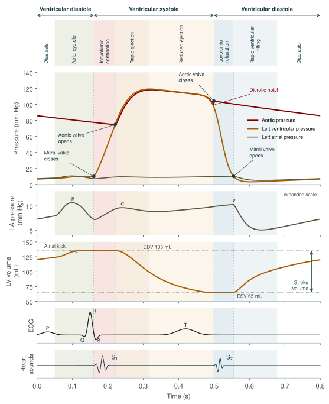
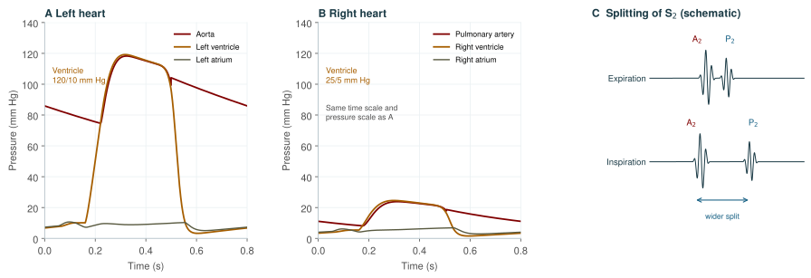
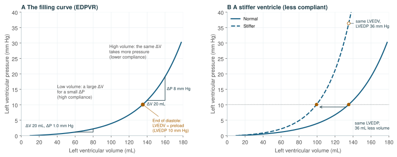
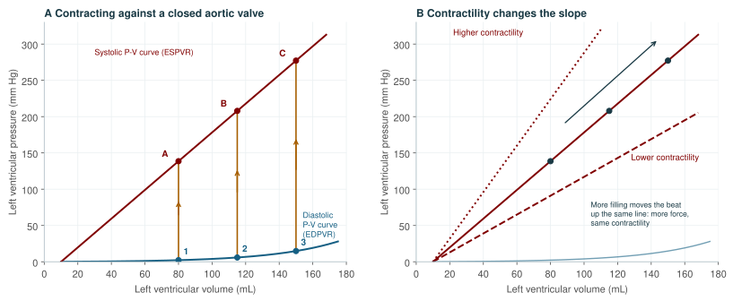
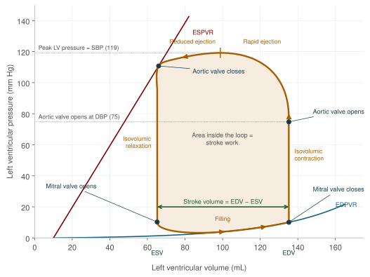
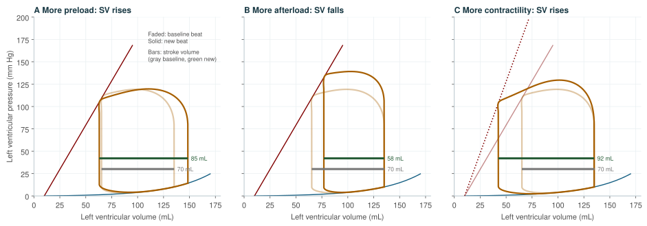
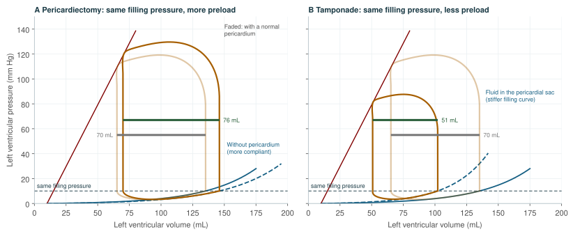

2 The Cardiac Pump
One heartbeat, the pressure-volume loop, and what sets stroke volume
- Describe the functional anatomy of the heart: four chambers, one-way valves that move passively, and how the ventricle shortens.
- Follow one heartbeat through its seven phases on the Wiggers diagram, using pressure differences to explain when each valve opens and closes.
- Relate the heart sounds and the physiologic splitting of S2 to valve closure on the two sides of the heart.
- Draw the diastolic and systolic pressure-volume curves (EDPVR and ESPVR) and say what each one shows.
- Draw a pressure-volume loop, label the four valve events, and read stroke volume and stroke work from it.
- Predict how a change in preload, afterload or contractility changes the loop and the stroke volume.
The exact values in figure captions come from a simple model. They are context, not things to memorize.
The heart beats about 100,000 times a day and moves about 5 L of blood a minute, some 7,200 L a day. This chapter follows one of those beats. It focuses on the left side of the heart, with a few references to the right. The question it answers is the one the rest of the block keeps asking: what sets the volume of blood the ventricle ejects with each beat? The answer, which the course turns into a mantra, is preload, afterload and contractility. The Overview chapter, from the first half of the same lecture, puts the pump in its place in the circuit.
2.1 Functional anatomy
The heart is two pumps in series. Blood returning from the body enters the right atrium, crosses the tricuspid valve into the right ventricle, and leaves through the pulmonic valve to the lungs. Blood returning from the lungs enters the left atrium, crosses the mitral valve into the left ventricle, and leaves through the aortic valve.
There are two kinds of valve:
- Atrioventricular (AV) valves, the tricuspid and the mitral, between each atrium and its ventricle. Their leaflets are tethered by chordae tendineae to papillary muscles, which keep the leaflets from everting (prolapsing) into the atrium when the ventricle contracts.
- Semilunar valves, the aortic and the pulmonic, between each ventricle and its artery.
Valves move passively. A valve opens when the pressure behind it exceeds the pressure in front of it. It closes when blood starts to flow backward across it. For the AV valves that happens almost as soon as the pressure difference reverses. For the aortic and pulmonic valves it happens a moment later, because moving blood has momentum (see reduced ejection below). The papillary muscles do not pull the AV valves open. Every valve event in this chapter follows from these rules.
The ventricle is built of muscle fibers wrapped in layers around the chamber. When it contracts, the apex contracts before the base, which pushes blood toward the outflow tracts. The chamber shrinks in circumference and in length, and the base of the heart, where the valves sit, descends toward the apex. That descent of the base stretches the atria, which matters for the atrial pressure tracing below.
2.2 The cardiac cycle on the Wiggers diagram
The Wiggers diagram puts the events of one beat on a common time axis: left atrial, left ventricular and aortic pressure, left ventricular volume, the ECG and the heart sounds (Figure 2.1).

The textbook Wiggers diagram on the slides says isovolumetric for isovolumic, decreased ejection for reduced ejection, and decreased ventricular filling for diastasis. They are the same phases. It also draws two more heart sounds, S3 and S4, which this lecture does not teach (see the Background callout below).
Electrical activation comes before contraction. The P wave precedes atrial systole, the QRS complex precedes ventricular systole, and the T wave, ventricular repolarization, comes near the end of ejection. Ventricular systole runs from AV valve closure to semilunar valve closure. Ventricular diastole is everything else, isovolumic relaxation and all of filling, and diastasis is only the slow middle part of filling.
Do not memorize it like someone’s calendar. For each phase, ask which chamber has the higher pressure, which valves that opens or closes, and whether blood is moving. The tracings follow from the answers. Small Group 1 builds the diagram this way: first the volume curve, then the pressure curves.
The cycle is described here starting in late diastole, in the order the lecture uses.
Diastasis. The mitral valve is open and the aortic valve is closed. Blood returns slowly from the lungs into the left atrium and on into the ventricle (on the right side, from the systemic veins), so left atrial, left ventricular and venous pressures rise gradually. Meanwhile blood keeps flowing from the aorta to the periphery, and aortic pressure keeps falling, throughout diastole.
Atrial systole. Just after the P wave, the atria contract and push a final volume of blood across the open AV valves. This produces the a wave on the atrial pressure tracing (and, from the right atrium, on the jugular venous pulse). This “atrial kick” contributes about 10% of left ventricular end-diastolic volume (LVEDV) at rest (in Figure 2.1, about 11 of 135 mL). It matters more when the ventricle is stiff and hard to fill, and when the heart rate is high, because a fast rate shortens diastole and leaves less time for passive filling.
Isovolumic contraction. After the R wave, the ventricle starts to contract. Its pressure rises above atrial pressure and the mitral valve closes, which contributes to the first heart sound, S1. The aortic valve is still closed, because ventricular pressure is still below aortic pressure. With both valves closed, the ventricle squeezes a fixed volume of blood, so pressure rises steeply at constant volume, the end-diastolic volume. The closed mitral leaflets bulge back toward the atrium, which makes the c wave.
Rapid ejection. When left ventricular pressure exceeds aortic pressure, the aortic valve opens (on the right, the pulmonic valve opens when right ventricular pressure exceeds pulmonary artery pressure). Blood flows out fast, ventricular volume falls quickly, and ventricular and aortic pressures rise together to their peak, the systolic pressure, with ventricular pressure just above aortic pressure. Atrial pressure falls during this phase because the descent of the base stretches the atria.
Reduced ejection. As the ventricle empties, its pressure generation falls. Aortic pressure falls too, but more slowly, because the stretched aorta holds stored energy, and late in ejection it runs slightly above ventricular pressure. Blood keeps moving forward anyway, carried by its momentum, while the reversed pressure difference slows it down. Behind the closed mitral valve, blood returning from the lungs fills the atrium, and atrial pressure rises: the start of the v wave.
Isovolumic relaxation. As the ventricle relaxes, forward flow stops and a brief backflow closes the aortic valve, which contributes to the second heart sound, S2. Aortic valve closure marks the end of ventricular systole and the start of diastole. On the aortic tracing it leaves a small notch, the dicrotic notch (also called the incisura): the dip from the brief backflow that shuts the valve, followed by a small rebound as the aortic wall and closed valve recoil. The T wave ends just before it. The mitral valve is still closed, because ventricular pressure is still above atrial pressure, so volume stays fixed at the end-systolic volume while pressure falls steeply. Atrial pressure is still rising. Relaxation does not need filling: the pressure falls because the muscle is relaxing, not because volume changes.
Rapid ventricular filling. When ventricular pressure falls below atrial pressure, the mitral valve opens. Blood that had collected in the atrium rushes in. The ventricle is still relaxing, which keeps its pressure low and helps “suck” blood in, so filling is fast. Atrial pressure falls as the atrium empties. As the pressure difference between atrium and ventricle shrinks, filling slows into diastasis, and the cycle begins again.
2.3 The right side and the heart sounds
The right heart goes through the same sequence at much lower pressures (Figure 2.2). Typical ventricular pressures, systolic over end-diastolic, are 120/10 mm Hg on the left and 25/5 mm Hg on the right. These are ventricular pressures, not the arterial blood pressure. The pulmonary circuit has a much lower resistance than the systemic circuit, so the right ventricle can move the same flow at a fraction of the pressure.
Because the two circuits are in series, the output of the right ventricle equals the output of the left on average. The slides call this the continuity equation: what goes into the lungs has to come out. It is the same conservation-of-flow idea as the continuity equation Q = v × A in the Hemodynamics chapter.

On the right side the valves close a little after their partners on the left: the tricuspid valve closes after the mitral valve, and the pulmonic valve closes after the aortic valve. So:
- S1 comes from closure of the mitral and tricuspid valves, at the start of ventricular systole.
- S2 comes from closure of the aortic and pulmonic valves, at the end of ventricular systole. Its two parts are called A2 and P2.
Physiologic splitting of S2. Normally A2 comes just before P2, and in inspiration the gap widens enough that you can hear two sounds. The lecture’s causal chain:
Inspiration → ↓ intrathoracic pressure → ↑ venous return to the right heart → longer right ventricular ejection → later P2 → wider A2–P2 split
On expiration the extra right-sided filling goes away and the split narrows again.
The jugular venous pulse in the neck reflects right atrial pressure. It has a, c and v waves that match the left atrial events above.
This comes from the course’s 2018 notes. S3 and S4 appear on the heart-sounds trace of the slides’ Wiggers diagram, but this lecture does not teach them.
Two more heart sounds can occur. S3 comes in early diastole, during rapid filling, when inflow into the ventricle stops abruptly. It can be normal in children and young adults and is heard in adults with a failing, volume-overloaded ventricle. S4 comes just before S1 and is linked to atrial contraction into a stiff ventricle, for example one thickened by years of high blood pressure.
2.4 Pressure-volume relationships
The second half of the lecture leaves the time axis behind and plots left ventricular pressure against left ventricular volume. A filling curve, a systolic curve and the loop that one beat traces between them do almost all the work.
2.4.1 The diastolic pressure-volume curve: filling and preload
Fill a relaxed ventricle step by step and record its pressure at each volume. The result is the diastolic pressure-volume curve, also called the end-diastolic pressure-volume relationship (EDPVR) (Figure 2.3 A).
Its steepness tells you how hard the ventricle is to fill. Compliance is the change in volume for a given change in pressure:
\[\text{Compliance} = \frac{\Delta V}{\Delta P}\quad(\text{mL/mm Hg})\]
Its inverse, ΔP/ΔV, is stiffness. With pressure on the vertical axis, as in the course’s figures, the slope of the diastolic curve is the stiffness, and compliance is its inverse. The curve is not a straight line. At low volumes a large volume change costs little pressure, and at high volumes the same volume change costs much more. The EDPVR itself does not change as the ventricle fills. Its slope (stiffness) rises at higher volumes, so the ventricle is less compliant there. The shape comes from the passive properties of the relaxed muscle and from structures around the heart, especially the pericardium, which becomes a stiff limit at large volumes (pericardial constraint).

Preload is the stretch of the resting muscle just before it contracts. In this course preload is measured as the left ventricular end-diastolic volume (LVEDV), or RVEDV for the right ventricle. Calling a volume a “load” sounds odd, but it keeps the reasoning simple: more blood in the ventricle at the end of diastole means longer fibers at the start of contraction.
Clinically, LVEDV is sometimes estimated from the left ventricular end-diastolic pressure (LVEDP), which can be measured with a catheter. The two are not interchangeable. LVEDP tells you LVEDV only if you know which filling curve the ventricle is on (Figure 2.3 B). A stiff ventricle, such as one thickened by long-standing high blood pressure, holds less blood at the same filling pressure, or needs a higher pressure to hold the same volume. A high LVEDP does not by itself mean a large preload.
2.4.2 Frank-Starling and the systolic pressure-volume curve
The Cardiac Muscle chapter covers this in detail, and the lecture previews it here: a cardiac muscle fiber stretched to a longer length before it contracts develops more force. Two mechanisms contribute: the overlap of thick and thin filaments, and, more important in the heart, the greater sensitivity of the contractile apparatus to Ca2+ at longer lengths (length-dependent activation). In the intact heart, the same idea is the Frank-Starling law of the heart: the more the ventricle fills, the more force it develops in the contraction that follows.
The lecture shows it with a thought experiment. Imagine the aortic valve kept shut by a very high pressure in the aorta, so the ventricle cannot eject. Every contraction is then isovolumic, and you can record the peak pressure the ventricle develops at each filling volume (Figure 2.4 A). Fill to point 1 on the diastolic curve and contract: pressure rises straight up, at constant volume, to point A. Fill more, to point 2, and the contraction reaches B. Fill to 3 and it reaches C. The peak pressure rises with end-diastolic volume. Joining A, B and C gives the systolic pressure-volume curve, the end-systolic pressure-volume relationship (ESPVR).

The systolic curve shows the Frank-Starling mechanism in pressure-volume terms: a beat that starts from a larger volume develops a higher pressure. The lecture calls it “the Frank-Starling curve”. Over the normal range of filling it is close to a straight line, and the lecture draws it that way. At very high filling it flattens, so more filling adds little force.
Contractility, also called inotropy, is the intrinsic ability of the heart muscle to generate force and shorten at a given preload and afterload. It does not depend on loading. It is set by the state of the muscle itself: sympathetic stimulation and circulating adrenaline acting through β1 receptors, its Ca2+ handling, and the health of the tissue. Greater contractility makes the systolic curve steeper (the line rotates up and to the left); less contractility makes it flatter (Figure 2.4 B); scar from a myocardial infarction, for example, makes it flatter. The force of contraction is the pressure a given beat develops. It depends on preload (the Frank-Starling mechanism), afterload and contractility. Heart rate and the speed of relaxation also affect cardiac output, but they are separate from contractility, and in this course a change in heart rate does not change the systolic curve.
Stretching the ventricle does not raise its contractility. Stretch raises the force of contraction: the beat starts from a larger volume and moves up the same systolic curve, with contractility unchanged. Contractility changes only when the state of the muscle changes, as with adrenaline or injury, and then the line itself becomes steeper or flatter.
2.4.3 The pressure-volume loop
One real beat, with the aortic valve working normally, traces a loop on these axes (Figure 2.5). The loop runs counterclockwise. Start at the lower right, at the end of filling:
- Mitral valve closes (lower right corner). Filling is over. The volume here is LVEDV, the preload.
- Isovolumic contraction (right side). Pressure rises straight up at constant volume.
- Aortic valve opens (upper right corner), when ventricular pressure reaches aortic pressure. That pressure is the diastolic blood pressure.
- Ejection (top). Volume falls as blood leaves. In rapid ejection, the right part of the top edge, pressure rises to a peak, which approximates the systolic blood pressure. In reduced ejection, the left part, pressure falls.
- Aortic valve closes (upper left corner). Ejection ends at the end-systolic volume (LVESV), the blood left behind. This corner sits on the systolic curve.
- Isovolumic relaxation (left side). Pressure falls straight down at constant volume.
- Mitral valve opens (lower left corner), and filling moves the loop right along the bottom, close to the diastolic curve, back to the start.

The loop gives you stroke volume and stroke work, but not time.
- Stroke volume is the width of the loop. SV = LVEDV − LVESV, the volume at mitral valve closure minus the volume at aortic valve closure. In Figure 2.5 it is 135 − 65 = 70 mL. The lecture puts it plainly: “stroke volume is the point.”
- The area inside the loop is the stroke work, the external work the ventricle does on the blood in one beat (pressure × volume has the units of work).
- There is no time on either axis. The loop cannot tell you the heart rate, how long any phase lasted, or the cardiac output. For cardiac output you need the heart rate as well:
\[\text{CO} = \text{HR} \times \text{SV}\]
At 75 beats/min, 75 × 70 mL is about 5.3 L/min.
Map the Wiggers diagram onto the loop. Each corner of the loop is one dashed line in Figure 2.1, each side is one phase, and the volume tracing gives the loop’s left and right edges. Small Group 1 asks you to label both diagrams with the same events.
Ejection fraction is the fraction of the end-diastolic volume that the ventricle ejects in one beat: SV/EDV. It is measured clinically, usually by ultrasound of the heart. It falls when contractility falls, but it also changes with preload and afterload, so it is not a pure measure of contractility. This comes from the course’s 2018 notes; the 2026 lecture works with stroke volume.
2.5 What determines stroke volume
The lecture’s mantra: when someone says stroke volume, you say preload, afterload and contractility.
- Preload: the stretch of the resting muscle before it contracts, measured as LVEDV (RVEDV for the right ventricle).
- Afterload: the load against which the muscle exerts its force during ejection. It is a concept, not a single measurement. It rises with the pressure the ventricle has to reach to open the aortic valve and eject (the diastolic and systolic aortic pressures), and with any resistance across the aortic valve. Arterial resistance, arterial stiffness and the size and shape of the ventricle also affect it. In the course diagrams, aortic pressure stands in for afterload.
- Contractility (inotropy): an intrinsic property of the muscle, its ability to develop force and shorten at a given preload and afterload. Greater contractility makes the systolic curve steeper.
Figure 2.6 changes each one in turn. Read each panel as an isolated change from the baseline beat, with the other two determinants held fixed, the valves working normally, and no reflex response yet.

| Change | What happens on the loop | Stroke volume |
|---|---|---|
| ↑ Preload | LVEDV increases along the same diastolic curve. The systolic curve is unchanged, and LVESV is about the same if the aortic pressure is the same. | ↑, because the loop widens to the right |
| ↑ Afterload | The ventricle must reach a higher pressure before the aortic valve opens, and it stops ejecting at a larger volume, where the higher end-systolic pressure meets the same systolic curve. LVEDV and contractility are unchanged. | ↓, because more blood is left at end systole |
| ↑ Contractility | The systolic curve gets steeper. At the same LVEDV and afterload, the ventricle ejects to a smaller LVESV. | ↑, because the loop widens to the left |
In the model, more preload (LVEDV 135 → 149 mL) raises stroke volume from 70 to 85 mL; more afterload (diastolic aortic pressure 75 → 101 mm Hg) lowers it to 58 mL; more contractility raises it to 92 mL.
The Circulation Lab draws the left ventricular pressure-volume loop beat by beat, with the diastolic and systolic curves behind it [3]. Remove or infuse blood, or change LV systolic function or diastolic stiffness, and watch the loop move.
A wider loop after a rise in contractility means more blood was ejected. It does not, by itself, show that ejection lasted longer or that the aortic valve closed later. Those are statements about time, and the loop has no time axis. The same caution runs the other way: when contractility falls after an infarction, stroke volume falls because ejection ends at a larger volume on the flatter systolic curve, not because the aortic valve closes early.
2.5.1 The pericardium and filling
The lecture asks why it might be illegal to perform pericardiectomies on greyhounds in Florida. The lecture itself treats the story as a myth, but it teaches compliance and preload well. Remove the pericardium and the ventricle fills along a more compliant curve: at the same filling pressure it reaches a larger LVEDV. More preload gives more force of contraction and a larger stroke volume, so more cardiac output, so (in the story) a faster dog and more prize money (Figure 2.7 A). The lecture’s slide draws the shift large to make the point clear. In a normal heart the effect of removing the pericardium is modest, as in the figure. The pericardium matters most when the heart is large or when the pericardial sac fills with fluid.
That second case is cardiac tamponade. Fluid in the pericardial sac squeezes the heart from outside, so the filling curve the ventricle works on is much steeper. At the same filling pressure the ventricle reaches a much smaller LVEDV, and stroke volume falls (Figure 2.7 B). In a patient the pressures measured inside the heart actually rise, because the fluid presses on the heart from outside. LVEDV still falls, because the ventricle is distended only by the difference between the pressure inside it and the pressure in the sac. The small groups follow this case, holding end-diastolic pressure fixed as the figure does, and then add the reflex response.

Blood loss works on the same diagram in a different way. After a hemorrhage the filling curve does not change. Less blood returns to the heart, the filling pressure falls, and the ventricle fills to a smaller LVEDV on the same diastolic curve, so stroke volume falls by the Frank-Starling mechanism. A transfusion, or fluid retained by the kidneys over days, does the reverse. Why the filling pressure falls is a story about the veins and the mean systemic filling pressure (Pms), told in the Control of Cardiac Output chapter.
The Small Group 1 key explains these cases by saying that the ventricle “equilibrates” with Pms and that the mitral valve closes sooner after hemorrhage, or later after transfusion or pericardiectomy (Questions 16, 19 and 20, and Case 4). The mitral valve closes when the ventricle starts to contract, so its timing does not depend on Pms, and the ventricle fills from the atrium, not from Pms directly. Pms affects filling by setting venous return and the filling pressure. The predictions the key reaches are right: smaller LVEDV and stroke volume after hemorrhage, larger after transfusion or fluid retention, and larger after pericardiectomy compared with the tamponade beat.
The same key (Question 17) explains the fall in stroke volume after an infarction by “earlier closing of the aortic valve.” The cause is the flatter systolic curve, which makes ejection end at a larger LVESV.
2.6 Putting it together
The ventricle is a “dumb sump pump”: within its working range it ejects more when it is given more.
↑ venous return → ↑ LVEDV (preload) → ↑ force of contraction (Frank-Starling) → ↑ stroke volume → ↑ cardiac output (at the same heart rate)
This is how the heart matches its output to what the veins return, beat by beat, without any instruction from the nervous system. The nervous system adds a second set of controls, heart rate and contractility, which the ANS and Extrinsic Control chapter covers. How the pump and the veins together settle on one cardiac output is the subject of Control of Cardiac Output.
2.7 Check your understanding
Three sets of readings come from one beat of a left ventricle: (a) ventricle 6, left atrium 8, aorta 84 mm Hg; (b) ventricle 50, left atrium 10, aorta 80 mm Hg; (c) ventricle 115, left atrium 9, aorta 113 mm Hg. For each, which of the mitral and aortic valves is open, is ventricular volume changing, and which phase could it be?
Answer
Ventricular pressure is below atrial pressure, so the mitral valve is open, and below aortic pressure, so the aortic valve is closed. Blood is entering and volume is rising: a filling phase. With pressures this low and this close, it is diastasis or atrial systole rather than the first rush of rapid filling.
Ventricular pressure is above atrial pressure, so the mitral valve is closed, and below aortic pressure, so the aortic valve is closed too. With both valves shut, volume is not changing: an isovolumic phase. One set of numbers cannot tell you which one. Isovolumic contraction and isovolumic relaxation both pass through these pressures, and only the direction of change (pressure rising or falling) separates them.
Ventricular pressure is above aortic pressure, so the aortic valve is open and the mitral valve is closed. Volume is falling: ejection, near the peak. Late in ejection the aortic pressure can sit slightly above ventricular pressure with the valve still open, because the moving blood carries on until flow reverses.
A ventricle’s end-diastolic pressure rises from 10 to 20 mm Hg. Someone concludes that its preload has doubled. Describe two different changes on the diastolic pressure-volume curve that could each give this reading, and say what you would need to know to tell them apart.
Answer
First, the ventricle could have filled further along the same curve. Preload (LVEDV) has then risen, but by much less than double, because the curve gets steeper at higher volumes. On the curve in Figure 2.3, going from 10 to 20 mm Hg takes the volume only from about 135 to about 162 mL. Second, the curve itself could have shifted up and to the left, as in a stiffer ventricle. LVEDV could then be unchanged or even smaller, so preload has not risen at all. Pressure alone cannot separate the two. You need the end-diastolic volume itself, or to know which filling curve the ventricle is on.
A classmate says, “When the heart fills more, it contracts more forcefully, so its contractility goes up.” What is right and what is wrong, and how would the two possibilities look on a pressure-volume diagram?
Answer
The observation is right: more filling gives more force of contraction and a larger stroke volume (Frank-Starling). The conclusion is wrong: contractility is a property of the muscle at a given preload and afterload, and filling moves the beat along the same systolic curve without changing it. More preload widens the loop to the right with the systolic line unchanged. More contractility makes the systolic line steeper and widens the loop to the left, at the same LVEDV.
Aortic pressure rises suddenly while contractility stays the same. On the first beat the aortic valve opens at a higher pressure and the ventricle ejects 12 mL less than before. Venous return to the ventricle does not change. Over the next several beats stroke volume climbs back toward its old value, still with no change in contractility. Explain how, and say where the loop ends up.
Answer
The 12 mL that was not ejected stays in the ventricle. Venous return during the next diastole adds the usual volume on top of it, so the next LVEDV is larger. More filling stretches the sarcomeres, and the beat moves along the same systolic curve to a larger stroke volume (Frank-Starling). This repeats for a few beats until stroke volume again matches what the veins return. The loop ends up shifted to the right, at a larger LVEDV and a larger LVESV, still opening at the higher aortic pressure, with stroke volume close to where it started.
A drug raises contractility and nothing else: the heart rate, LVEDV and the aortic pressure at which the valve opens stay the same. Sketch the new loop over the old one. Which corner moves, which way, and what happens to stroke volume and stroke work?
Answer
The systolic curve gets steeper. The lower right corner (mitral closure, LVEDV) and the opening pressure stay where they were. The upper left corner, where ejection ends, moves left, to a smaller LVESV on the steeper line, and usually up a little. The loop widens to the left, so stroke volume rises, and its area, the stroke work, grows. With the heart rate unchanged, cardiac output rises in proportion to stroke volume.
During a slow, deep inspiration, left ventricular stroke volume falls slightly for a few beats. Using the fact that the two ventricles are in series, explain why.
Answer
Inspiration lowers the pressure around the heart and lungs. The pulmonary vessels widen and hold more blood, so for a few beats less blood reaches the left atrium than leaves the right ventricle. Left ventricular filling falls a little, end-diastolic volume is lower, and by Frank-Starling the left ventricle ejects a little less. The extra blood held in the lungs reaches the left side over the next few beats. Because the ventricles are in series, their outputs match when averaged over a whole breath, but not beat by beat.
2.8 Key equations
| Equation | Use |
|---|---|
| Compliance = ΔV/ΔP | How easily the relaxed ventricle fills. On the diastolic curve as drawn, the slope is stiffness (ΔP/ΔV), the inverse of compliance |
| SV = LVEDV − LVESV | Stroke volume, the width of the pressure-volume loop |
| CO = HR × SV | Cardiac output; needs heart rate, which the loop does not show |
2.9 Sources
This chapter follows the Cardiac Pump part of the 2026 Overview of the Cardiovascular System and the Cardiac Pump lecture for MEDC 30504 and draws on the lecture notes, CV Small Groups 1 to 3, and the course’s 2018 notes, corrected and updated. All figures were drawn for this book.